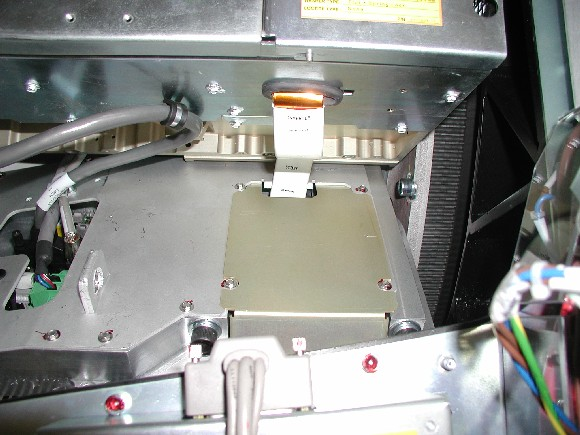
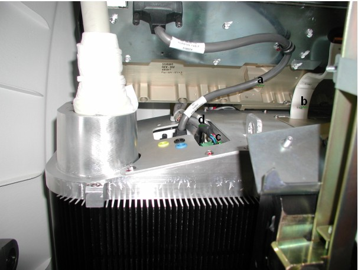

Proprietary to General Electric
Direction 5307452-8EN, Rev# 4
Discovery CT750 HD Service Methods - Adv
Proprietary to General Electric |
| Required Persons | Preliminary Reqs | Procedure | Finalization |
|---|---|---|---|
| 1 | Timing Not Applicable | 9 hours | 1 hour |
This document provides the necessary steps to replace and configure the High Voltage Tank for imaging.
| Last Revised: | 11 September 2008 |
| Item | Qty | Effectivity | Part# | Manufacturer | |
|---|---|---|---|---|---|
| High Voltage Bleeder Kit | 1 | - | 2375192-2 | - | |
| Oscilloscope with 10X Probe | 1 | - | TDS3034B or similar | Tektronix or similar | |
| CT Service Hoist Kit | 1 | - | 5149069 | - | |
| Digital Multimeter | 1 | - | Fluke 87III or similar (See Required Conditions) | Fluke or similar | |
| Smart Cathode Drive to Multimeter Cable | 1 | - | 5267115 | - | |
| CT Service Post and Boom | 1 | - | - | - | |
| Spanner Wrench | 1 | - | - | - | |
| Calibrated Torque Wrench Set | 1 | - | - | - | |
| Item | Qty | Effectivity | Part# | Manufacturer |
|---|---|---|---|---|
| Transformer Oil (1 gallon) | As Required | - | T0552G, T0552F or 2164148 | - |
| Dry Wipes or Paper Towel | As required | - | - | - |
| Latex Gloves | As required | - | - | - |
| Ty-Raps® | As required | - | - | - |
| Item | Qty | Effectivity | Part# | Manufacturer | |
|---|---|---|---|---|---|
| High Voltage Tank | 1 | - | See IPL | See IPL | |
| POTENTIAL FOR ELECTRIC SHOCK | |
| VOLTAGES MAY BE PRESENT | |
| USE PROPER LOCKOUT/TAGOUT PROCEDURES BEFORE REPLACING COMPONENTS. |
| POTENTIAL FOR PERSONAL INJURY (PINCH, CRUSH, ENTANGLEMENT OR IMPACT INJURIES ARE POSSIBLE.) | |
| GANTRY HAS ROTATING ASSEMBLY | |
| USE THE GANTRY ROTATIONAL LOCK, TO PREVENT UNCOMMANDED MOTION OF THE GANTRY ROTATING ASSEMBLY. |
| Follow ALL required safety and PPE procedures customary for your organization, when working on this product. | |
| Condition | Reference | Eff |
|---|---|---|
For Performix HD X-ray Tube | - | - |
Recommend procedure completion by GE trained service personnel. | - | - |
Digital Multimeter VDC mode must have 10-Mohm input impedance. | - | - |
Digital Multimeter must have a mA scale capability of 199.9 mA. | - | - |
Digital Multimeter must have 3½ digits display capability. | - | - |
Digital Multimeter must be capable of displaying at least 2 decimal places | - | - |
Move table to its home longitudinal position.
Remove right side gantry cover.
Turn OFF [HVDC ENABLE] , [AXIAL DRIVE ENABLE] , and [120 VAC] switches on Service Switch Panel.
Remove scan window
Remove gantry left side, top, and front covers.
Turn ON [120 VAC] switch on Service Switch panel.
Rotate gantry such that High Voltage Tank assembly is in 2 o'clock position.
Turn OFF [120 VAC] switch on Service Switch panel.
Remove two lower M12 tank-mounting bolts.
| NOTE: | The new tank should come with mounting hardware. If new bolts are provided with the tank, throw these bolts away. |
Turn ON [120 VAC] switch on Service Switch panel.
Rotate gantry such that High Voltage Tank assembly is in 2:30 o'clock position.
Turn OFF [120 VAC] switch on Service Switch panel.
Engage rotational lock.
Cut Ty-Raps on inverter and auxiliary box clamps.
Remove High Voltage cable candlestick.
Place a cover over the candlestick.
Place a cap or paper towel in the top of receptacle to prevent oil spillage and dirt from contaminating receptacle.
Remove four M3 screws holding top cover on High Voltage Tank to expose wire connections.
Illustration 1: High Voltage Tank Top Cover

Disconnect wire connections from the High Voltage Tank ( Illustration 2) as follows:
High Voltage Tank measure cable (from the inverter)
High Voltage inverter/tank cable (from the inverter)
48VDC Supply
Communication Cable to SCORP and DAS
Illustration 2: High Voltage Tank Connections

Connect hoist hook to tank lifting point. Remove all slack in chain and apply light tension.
Remove upper two M12 tank-mounting bolts.
| NOTE: | New tank should come with mounting hardware. If new bolts are provided with tank, throw old bolts away. |
Remove the two front M12 mounting nuts.
| NOTE: | New tank should come with mounting hardware. If new nuts are provided with tank, throw old nuts away. |
Using hoist, carefully lift tank and swing it free from gantry.
Lift new High Voltage tank using gantry hoist.
Slide new High Voltage tank into place from front of gantry, over the 2 mounting studs.
Fasten new M12 mounting bolts, washers, and nuts.
| NOTE: | If new hardware is not supplied, clean any dried Loctite from existing hardware. |
| NOTE: | Do not use Loctite on bolts. |
Apply the following “preload” torque to the M12 mounting bolts and nuts.
| 25 ft-lbs | 33.9 N-m | 295 in-lbs | 340 kg-cm |
Remove the hoist hook from the tank.
Apply the following final torque to the M12 mounting bolts and nuts.
| 49 ft-lbs | 66 N-m | 590 in-lbs | 680 kg-cm |
Reconnect the wire connections to the High Voltage Tank ( Illustration 2).
Install the top cover on the High Voltage Tank with the M3 screws ( Illustration 1).
Apply final torque to the M3 screws.
| 1 N-m | 8.9 in-lbs | 10.3 kg-cm |
Secure High Voltage cable. (see Securing HV Cable).
| DAMAGE TO THE TANK, TUBE, OR OTHER PARTS OF THE GANTRY | |
| CAN OCCUR DUE TO INCORRECTLY SEALED AND SECURED HIGH VOLTAGE CABLES. | |
| Be sure to correctly seal and secure all high voltage cables. |
Disengage rotational lock.
Turn ON [HVDC ENABLE] , [AXIAL DRIVE ENABLE] , and [120 VAC] switches on Service Switch panel.
Press [ESTOP RESET] on Service Switch panel and wait until scan hardware is reset.
Save System State (See System State Save Restore.)